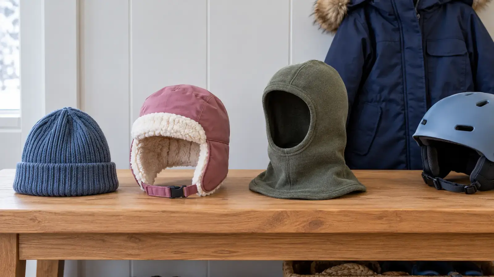

Beanie
Best for: ordinary dry walking and easy pocket storage. Tradeoff: can ride above the ears, bunch under a hood or stretch loose; a cuff does not prove warmth.
COLD-WEATHER GEAR · FIT FIRST · AUTHORITY-EXPANSION
The best hat covers what the day exposes, stays dry enough to work and does not break the fit of a required helmet. Start with the coat and activity, not the cutest category.

A winter hat is part of a clothing system, not a temperature guarantee. A beanie is simple and easy to pocket. An earflap hat adds targeted ear and cheek coverage but can create closure or visibility problems. A balaclava covers more area but can trap moisture, interfere with glasses or move under a helmet. The right answer depends on the child, coat, wind, activity and any required protective equipment.
The CDC advises adults and children outdoors in winter to use a hat, face covering, mittens, water-resistant outerwear and loose layers, and warns that wet clothing can create dangerous chilling even above 40°F. That does not let a retailer assign a safe temperature to a hat for your child. Use the layer system guide for the body, the glove and mitten fit test for hands, and this page only for headwear.
A rib-knit or fleece beanie has few parts and packs easily. Compare the child’s current head measurement with the maker’s size chart, then check ear coverage, stretch recovery, seam placement, fiber and care instructions. A very loose beanie can slide; a tight one can cause pressure, ride up or make the hood uncomfortable.
Look for a smooth fit under the coat hood, not under a helmet unless the helmet manufacturer explicitly allows the exact arrangement. A pom, thick cuff or top knot can make a hood or helmet sit wrong. Decorative bulk is not free.
Earflaps can help when a normal beanie repeatedly exposes the ears. Check whether each flap actually reaches below the ear without pressing on glasses. The closure should be short, secure and used exactly as directed. Avoid long ties, dangling cords, large toggles and anything that can catch on playground equipment, branches, doors or moving gear.
Test head turning with the coat zipped. If the child cannot hear normal instructions, complains of rubbing or keeps undoing the closure, choose another category. Do not tighten a strap to compensate for the wrong size.
A balaclava-style hood may cover head, ears, cheeks and neck in one piece. Compare the exact face opening, fabric, seams, moisture management, laundering and maker sizing. The opening must stay clear of the eyes and mouth. Children should be able to remove or reposition it as the activity permits; an adult remains responsible for monitoring cold, breathing comfort and wet fabric.
Do not pull fabric across the mouth for intense activity just because the product photo shows it. Do not use a loose neck tube on a playground or around machinery. For helmets, follow the equipment manual and provider rules. The correct solution may be a helmet-specific liner from the helmet maker, a different helmet size within the approved system, or ending the activity.
Fiber names describe material, not guaranteed warmth. Wool blends, synthetics and fleece handle moisture, wind and washing differently. Cotton can hold moisture and may be a poor fit for long cold exposure, but this guide does not turn a label into a weather rating. Check the complete care label, seams, drying time, allergy or sensory concerns and return route.
Words like thermal, windproof and waterproof need a precise manufacturer explanation. A water-resistant outer panel does not make every seam or opening waterproof. If the hat becomes wet, replace it with a dry system or go inside; do not wait for a child to “tough it out.”
Check the forecast, wind and precipitation before leaving. Use the go/shorten/leave cutoff and shorten the session before children are shivering, confused, clumsy, unusually quiet or unable to use their hands normally. CDC lists shivering, exhaustion, confusion, fumbling hands, memory problems, slurred speech and drowsiness among hypothermia warning signs in adults; cold injury is not a gear-review opportunity. Seek appropriate emergency help.
Pack one dry backup hat in a sealed bag for a longer winter outing, plus the proven coat, hand protection and footwear. The winter-boot guide handles feet. A spare hat does not justify a dangerous forecast.
Skip a hat with no usable size information, unclear fiber or care label, dangling cords, hard decorations at pressure points, vague helmet claims or a return policy that prevents a clean indoor fit test. Skip a three-pack when one category solves the job. Never buy an adult-sized item and tie it tighter around a child.
Low energy: compare the two hats already owned and keep the one that passes coat, ear and vision checks. Sensory-sensitive child: remove tags only after the return decision, use the child’s proven texture and stop after one short indoor test. Younger sibling nearby: keep packaging, fasteners and small parts away. Helmet activity: book a provider fitting or call the manufacturer instead of improvising.
Get individualized medical advice for circulation, skin, breathing or temperature-regulation concerns. Ask the helmet manufacturer, qualified shop or activity provider when headwear changes equipment fit. Skip outdoor use for severe weather, wet gear, a child who cannot communicate discomfort or any item that shifts into the eyes or mouth. The gear is not worth overriding a stop signal.
Reviewed October 28, 2026 using CDC hypothermia prevention and winter clothing guidance, plus U.S. Consumer Product Safety Commission guidance on children’s outerwear drawstrings and activity-specific helmet fit. The category matrix and fit test are independent editorial tools, not product testing, medical advice or a helmet approval. Report corrections through About.
MAKE THE WEEK COUNT
Build the plan your family can finish well, then leave enough energy for the next part of the day.
More family plansTHE USEFUL STUFF
These are practical categories to compare—not a reason to overpack. Check fit, specifications and current reviews before buying.
Paid links: As an Amazon Associate I earn from qualifying purchases. You pay no additional cost.
Compare the current head measurement, ear coverage, stretch recovery, seams, fiber and care label with the child’s real coat and hood.
See current options → COMPARE ON AMAZONCheck ear coverage, short secure closure, side vision, hearing, seams and snag risks; reject dangling neck cords and oversized toggles.
See current options → COMPARE ON AMAZONCompare the face opening, moisture handling, seams, care and maker sizing. Never assume helmet compatibility; the activity helmet manual controls.
See current options →